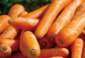
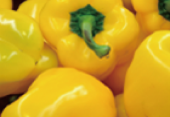
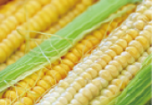
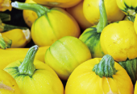

Vegetables

Crunchy and naturally sweet, our farm-fresh carrots are packed with essential nutrients. They are the perfect choice for a healthy snack, a colorful salad, or a hearty stew.

Bright, crisp, and refreshing, our yellow bell peppers offer a remarkably mild, sweet flavor. These juicy peppers are excellent for fresh salads, stir-fries, or as a roasted side dish.

Picked at peak ripeness, our golden sweet corn offers an irresistible sweetness. Filled with plump kernels, they are fantastic for boiling, grilling, or enriching your favorite warm soups.

Earthy and highly nutritious, our vibrant pumpkins boast a subtly sweet, nutty flavor. They are incredibly versatile and perfect for roasting, baking into pies, or blending into velvety soups.